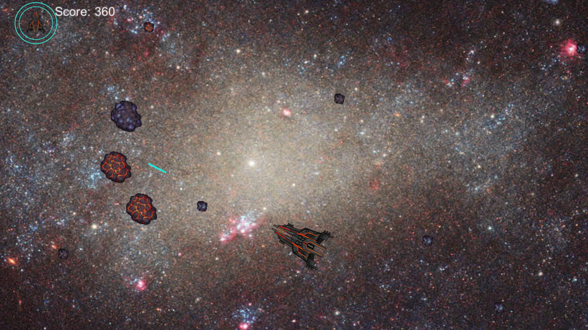

JACK CARRIG
Game Designer and Programmer
ASTEROIDS
INFORMATION
Re-creation of the classic 1979 Atari game in Unity, class project completed over the course of 2 weeks. I added 2 new abilities - a missile volley, and
a large, sweeping laser to clear the screen. This project uses FMOD to modify sounds such as the pitch of the
ship's engines, and the laser powering up. I also added a hardcore "Kessler Mode", where small asteroids cannot
be destroyed, testing the player's evasion skills.